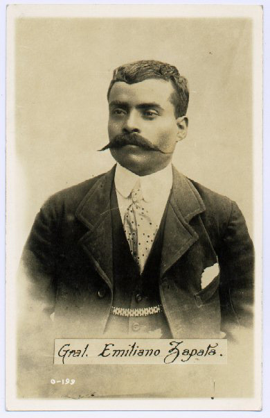

Emiliano Zapata (1883-1919)

Revolucionario mexicano. Fue encarcelado en 1906 por luchar contra los hacendados azucareros tras encabezar la rebelión de los indios. Se unió a la revolución de Madero contra Porfirio pero no aceptó que fuera presidente, pues reprimió la revolución popular y no prestó demasiada atención a las reformas agrarias. Marchó sobre México al lado de Pancho Villa en 1914. Consiguió devolver las tierras a los indios mediante el Plan Ayala, creado por él. Ocupó tres veces la ciudad de México y dominó medio territorio bajo la presidencia de Venustiano Carranza. Cuando fue derrotado por álvaro Obregón se trasladó a Tlaztizapán, donde estableció su cuartel general. En esta ciudad implantó la reforma agraria, creó servicios públicos y una red de escuelas independientes del Gobierno central. Murió en una emboscada tendida por un coronel aliado de Carranza.